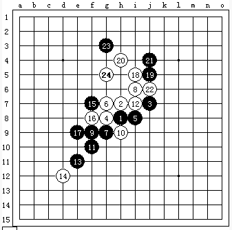

做棋和做杀的经典!
#1 做棋和做杀的经典! 作者：逆刃 发表时间：2007-4-27 13:32:54
原版:
做棋和做杀的经典!残局来源于残山互通的典型开局,若能领悟,你的做棋水平一定上一大台阶!
第二版：
最新版：
#2 Re:做棋和做杀的经典! 作者：逆刃 发表时间：2007-4-30 10:04:07
#3 Re:做棋和做杀的经典! 作者：gerbo 发表时间：2007-4-30 10:48:51
确实经典，用黑石是肯定算不出的，但李洪斌等人在那时（很早，具体时间忘记了）也断断续续的用了几个月研究这个局面，结果发现是白胜～～值得学习！！
#4 Re:做棋和做杀的经典! 作者：逆刃 发表时间：2007-4-30 15:23:31
呵呵,不知道李大师早有研究,不过我没看到过关于这个局面白先胜的习题, 本人水平一般,不过,有热情就是好的嘛,呵呵....
本人水平一般,不过,有热情就是好的嘛,呵呵....
#5 Re:做棋和做杀的经典! 作者：逆刃 发表时间：2007-4-30 15:38:40
对了,突然想到一个问题,你说李大师他们研究了几个月的时间?应该不用那么久吧,不过你说是很早的事了，我想,是不是因为那时的软件不怎么好呢!呵呵..
#6 Re:做棋和做杀的经典! 作者：海天之轮 发表时间：2007-4-30 15:46:04
那时候都几乎纯手工拆棋的。
另外李洪斌他们以前拆的残山不仅仅是这个变化。。这个变化纯手工也不用几个月的
#7 Re:做棋和做杀的经典! 作者：yidefei 发表时间：2007-4-30 15:51:16
或许吧，
如果13不冲呢？那就未必是白胜了吧？
#8 Re:做棋和做杀的经典! 作者：海天之轮 发表时间：2007-4-30 15:54:05
13不冲也是白必胜，不过相当复杂，惊天地泣鬼神#9 Re:做棋和做杀的经典! 作者：逆刃 发表时间：2007-4-30 15:59:32
呵呵,有好东西的请大家拿出来分享下哈,我就这个冲了的,确实比较简单,不过杀棋的过程也蛮漂亮的哦!#10 Re:做棋和做杀的经典! 作者：无尽 发表时间：2007-4-30 17:19:10
我想看看不冲的#11 Re:做棋和做杀的经典! 作者：longfx 发表时间：2007-4-30 17:38:29
不冲的似乎有点问题.:(
#12 Re:做棋和做杀的经典! 作者：逆刃 发表时间：2007-4-30 19:18:07
不冲的话确实有反..#13 Re:做棋和做杀的经典! 作者：thl500 发表时间：2007-5-13 12:12:54
白先胜 局面并不是很复杂 可惜我不会传图
#14 Re:做棋和做杀的经典! 作者：yidefei 发表时间：2007-5-13 14:11:19
不过云月通这个残月的变化因为没有盘端问题好像是可以白胜（不冲）！但是这个正宗的残月呢？真是白胜？倒希望学习一下如果谁愿意指点的话。
#15 Re:做棋和做杀的经典! 作者：屏蔽 发表时间：2007-6-2 10:54:40
一点个人看法：如左所示，我认为白24防守后黑棋在左下方攻不下来，而白棋在右上方有VCT，黑棋又不能支援，无法防守。e11点的冲四可有可无，事实上白20活三后黑棋只有21、23的手段来防止速败。无论怎样，希望能看一看正解……我记得有个帖子里面详细讲过，但是找不到了，搜索也找不到……根据我的印象，若是真能领悟那样的杀棋手段，棋力的确会有很大的提高的。
#16 Re:做棋和做杀的经典! 作者：屏蔽 发表时间：2007-6-2 11:05:50
原来iwzq对于Rena谱是自动修正到第一分支啊，明白了……#17 Re:做棋和做杀的经典! 作者：longfx 发表时间：2007-6-2 11:11:27
25唯一d8#18 Re:做棋和做杀的经典! 作者：longfx 发表时间：2007-6-2 11:16:35
25活三以后,可以在左边局部交换,然后A点.这个时候由于A点形成了一个VCF,白不得不失去一个先手去防,黑就获得一个二次防守的机会.局面也因此复杂.
#19 Re:做棋和做杀的经典! 作者：屏蔽 发表时间：2007-6-2 11:26:16
我靠，这么深奥～
确实米有想到，谢谢哈～
#20 Re:做棋和做杀的经典! 作者：longfx 发表时间：2007-6-2 12:36:50
恩,这个15以后变化基本是唯一到25了,后面要交换,黑在左边继续折腾直到白拿回先手.这个11的下法好象基本被弃用了.
#21 Re:做棋和做杀的经典! 作者：屏蔽 发表时间：2007-6-2 13:12:38
哈，我觉得这个变化还不错的，我是说11活三，15－16位的下法。#22 Re:做棋和做杀的经典! 作者：41322 发表时间：2007-7-1 3:11:30
把谱发上来好不.偶杀不出#23 Re:做棋和做杀的经典! 作者：fengle 发表时间：2007-7-2 14:21:02
白i5，黑j5，白h4
#24 Re:做棋和做杀的经典! 作者：fengle 发表时间：2007-7-2 14:26:42
我认为19步i5是最强防了
#25 Re:做棋和做杀的经典! 作者：杨华明 发表时间：2007-7-6 21:21:24
怎么杀的呀？#26 Re:做棋和做杀的经典! 作者：yuelee 发表时间：2007-7-7 9:46:47
 少少好强，偶像~
少少好强，偶像~
这样的25也能折腾出来
#27 Re:Re:做棋和做杀的经典! 作者：fengle 发表时间：2007-7-7 19:07:13
于i3和g6双杀
#28 Re:做棋和做杀的经典! 作者：风の情深 发表时间：2007-7-17 13:35:23
似曾相识! 很9以前好像见过
#29 Re:做棋和做杀的经典! 作者：笑谈 发表时间：2007-9-29 9:01:03
我为什么看不到图?????????????#30 Re:做棋和做杀的经典! 作者：lmhcx 发表时间：2007-11-10 15:58:29
24楼，好像21手有误，不然，黑输不掉的吧#31 Re:做棋和做杀的经典! 作者：无尘之无用 发表时间：2007-11-22 22:04:45
我怎么看不到?全是些小红叉?能给告诉我是为什么吗?
#32 Re:做棋和做杀的经典! 作者：gerbo 发表时间：2007-12-4 17:34:38
看不见图的请检查下是否安装了ＪＡＶＡ虚拟机，安装地址：ShowPost.asp?ThreadID=303#33 Re:做棋和做杀的经典! 作者：gerbo 发表时间：2007-12-4 17:38:24
这个图形可参考：http://www.shwzq.com/qiwen/ShowArticle.asp?ArticleID=100
http://www.shwzq.com/qiwen/ShowArticle.asp?ArticleID=101
#34 Re:做棋和做杀的经典! 作者：逆刃 发表时间：2008-1-5 0:39:37
帖子修改过了.顶上去...
#35 Re:做棋和做杀的经典! 作者：杨华明 发表时间：2008-1-11 11:56:47
俺看不到#36 Re:做棋和做杀的经典! 作者：五子天下 发表时间：2008-2-20 16:40:17
研究~ 怎么研究？反复摆谱？#37 Re:做棋和做杀的经典! 作者：虚无 发表时间：2008-3-18 9:25:14
看不到图片~~`郁闷,能做成chm~~吗>?#38 Re:做棋和做杀的经典! 作者：逆刃 发表时间：2008-3-18 12:07:36
看不到图片请看这个帖子ShowPost.asp?ThreadID=303
#39 Re:做棋和做杀的经典! 作者：学生刀 发表时间：2009-4-14 19:44:02
顶起 好贴
#40 Re:做棋和做杀的经典! 作者：游戏人间 发表时间：2009-4-15 2:07:55
=======上图对应的爱五子棋谱代码如下，以便你拆解：========
h8h9j9g8i8g9g7i10f7h7f6i9f9f8e7i11j11h10j12j10d7c7g10e8d8g5d9d6e5d4c9b10f12d10h12i12i13k11
======================================================
38定式结束。结论是黑局部先手可攻。但不可能胜。属于被淘汰的变化。但是这个11还是可下的。如下图：
=======上图对应的爱五子棋谱代码如下，以便你拆解：========
h8h9j9g8i8g9g7i10f7h7f6i9f9f8h10e5e7d7h5g6j7j5i6k8h4i3d8g5e10e11g11f10j11i11i12j13l10k9k10l9j10j8m10
======================================================
这是06年浙江赛我和卓淼军的一盘对局。黑还是有很强的攻击手段的。
这盘棋的37还是很得意的一手，37后无防了。
#41 Re:做棋和做杀的经典! 作者：入山者 发表时间：2009-7-8 17:59:52
很经典
因局面多变化，自己重新打谱不方便
谁能把2楼逆刃的谱提供来下载。
#42 Re:做棋和做杀的经典! 作者：白河愁 发表时间：2009-7-9 14:35:39
小饼干来了残月白16必杀谱
#43 Re:做棋和做杀的经典! 作者：我爱江俊男 发表时间：2010-7-29 19:27:34
太经典了。
［此帖子已被 我爱江俊男 在 2010-7-29 19:30:07 编辑过］
#44 Re:做棋和做杀的经典! 作者：棋元道 发表时间：2012-3-8 18:14:16
屏蔽30手？黑杀#45 Re:做棋和做杀的经典! 作者：悠悠紫叶情 发表时间：2012-3-9 13:01:17